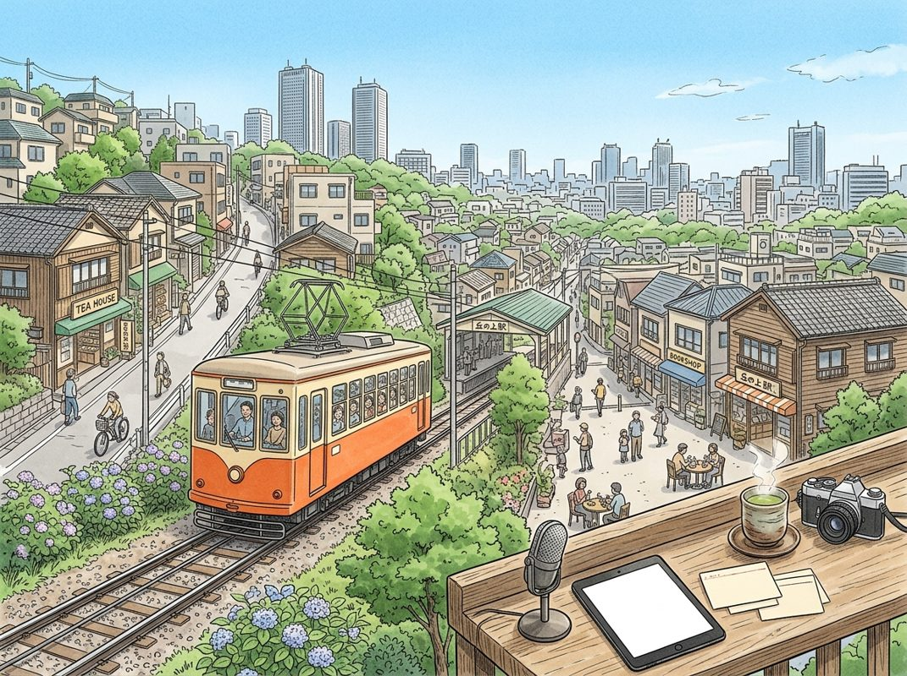

11/9

播客简报 2026-11-09
今日更新
Katt Williams: I Lied My Way Into Comedy! List The 300 People Ahead Of You, Then Outwork Each One!
来源：Diary of a CEO
原链接：
状态：已读完整音频 transcript
这期播客深入探讨了喜剧演员Katt Williams从极度悲惨的童年（包括虐待和无家可归）到成为顶级喜剧演员的非凡旅程。它揭示了天赋背后不为人知的毅力、策略性努力和对自我作品的掌控。这期节目适合所有寻求在逆境中找到力量、理解成功所需长期投入，以及学习如何通过不懈努力超越竞争的中文读者。
- 童年创伤与离家出走：被虐待的早慧少年：Katt Williams的童年充满了难以想象的创伤。从5岁到12岁，他遭受了父母持续且严重的身体虐待，包括被绑在地下室的柱子上，用延长线、水管甚至木板殴打至昏迷。他回忆道，父母认为这是为了让他过上他们设定的宗教生活（据他“据说”是耶和华见证人），但这种虐待远超任何宗教教义。早慧的Katt在3岁就能阅读，书籍成为他逃离现实的唯一途径，他从中寻找冒险和英雄的影子，并天真地认为英雄的道路总是先苦后甜。他很早就意识到自己的成长环境与同龄人不同，父母对他缺乏作为个体的关爱，而他的两个弟弟则受到了不同的对待，这让他感到自己是个“失望”。13岁时，学校发现他身上的伤痕并报警，警方计划逮捕他的父母并安置孩子。为了保护弟弟们不被分开，Katt选择在警方到来前离家出走，结束了这场持续七年的“私人战区”。
- 迈阿密的流浪生活与人生启蒙：从街头学到的智慧：带着仅有的1200美元，13岁的Katt Williams搭便车前往迈阿密，一个他认为温暖且充满机会的城市。他睡在孔雀公园（Peacock Park），一个他后来形容为“奇迹发生之地”的地方。在1983年《迈阿密风云》盛行的年代，他观察到公园里无家可归者的生活，其中不乏曾经的医生、律师。他们讲述了毒品如何毁掉他们的人生，这让Katt Williams对硬性毒品产生了极大的恐惧，并终生远离。这段经历让他认识到社会中善恶并存，也让他学会了如何在没有身份证明的情况下打零工谋生。他曾短暂尝试偷车，但很快因道德底线而放弃。一年半后，他意外在高速公路上与家人重逢，才得知父母为逃避警方逮捕也已搬到佛罗里达。这次重逢让他意识到，尽管父母可能从未真正寻找他，但他对弟弟们的思念却异常强烈。
- 喜剧的偶然邂逅与“精神良药”：发现自我疗愈的力量：Katt Williams的喜剧生涯始于一个偶然的谎言。16岁时，他跟随卖花的朋友们来到一家俱乐部，为了混进去，他谎称自己是喜剧演员。结果，他被安排上台参加喜剧比赛，并凭借一个关于单一主题的段子赢得了25美元的奖金。然而，他当时并未将喜剧视为一份职业，因此在这次成功后，他中断了喜剧表演长达五年。在此期间，他曾梦想成为一名海军陆战队员，但因年龄不足四个月而未能如愿。他转而从事推销工作，甚至在一次偶然的机会下，与一群“夜间女士”相遇，并从她们那里学到了许多关于男性卫生和女性视角的宝贵人生经验，这让他成为了一个“更好的男人”。尽管如此，喜剧在他心中始终占据特殊位置。他将喜剧视为一种“精神良药”，能够改变心情，帮助他度过最艰难的日子，这让他对喜剧产生了深刻的敬意，并最终在20岁时重新回到了舞台。
- “列出300个名字”的成功哲学：超越竞争的秘诀：重回喜剧舞台后，Katt Williams制定了一套独特的成功策略。他没有把目光投向那些已经功成名就的巨星，而是列出了当时在他之前、活跃在行业中的300位喜剧演员的名字。他逐一研究他们的表演，分析他们的笑点频率，并决心超越他们。他的核心信念是，在美国，只要你比竞争对手更努力，就能取得成功。他将这种“超越他人”的哲学应用到生活的各个方面：割草时，他能以更低的价格和更多的客户量击败成年人；推销时，他知道300次拒绝能带来30次成功，于是他的目标就是获得更多的拒绝，从而获得更多的成功。在喜剧表演中，他会计算每位喜剧演员在15分钟内引爆的笑声次数，并设定目标，确保自己的笑声次数能达到16到17次，远超平均水平。这种对细节的极致追求和不懈的努力，是他走向卓越的基石。
- 漫长磨砺与策略性成长：15年的厚积薄发：从20岁重新开始喜剧表演，到35岁推出他的第一个喜剧特辑《Katt Williams Live》，Katt Williams经历了长达15年的漫长磨砺。他没有等待所谓的“大突破”，而是相信成功是每天努力的累积。他战略性地规划自己的成长路径：首先，他搬到萨克拉门托两年，在白人观众面前磨练自己的喜剧技巧，确保他的段子能够跨越文化界限。随后，他又在奥克兰度过了两年半，那里有大量对喜剧有高鉴赏力的黑人观众，这促使他进一步提升自己的表演深度和广度。通过这种方式，他确保自己的喜剧无论面对白人还是黑人观众，都能同样引人发笑。他坚持一套严格的工作模式：每天投入八小时进行喜剧创作和练习，并在100个城市进行巡演，不断打磨每一个小时的段子，确保其在全球范围内的普适性。这种持续的迭代和优化，是他能够不断推出高质量特辑的关键。
This Is How New York City Takes Out Its Trash
来源：Odd Lots
原链接：https://omny.fm/shows/odd-lots/this-is-how-new-york-city-takes-out-its-trash
状态：已读完整音频 transcript
这期播客深入探讨了纽约市垃圾处理系统复杂的物流、悠久历史和正在进行的“垃圾革命”。它揭示了城市管理中看似日常却至关重要的公共服务如何被意识形态、历史遗留问题和创新技术所塑造。对于任何对城市规划、公共服务、物流挑战以及大型城市如何应对日常运营难题感兴趣的中文读者来说，这都是一次值得深入了解的深度剖析。
- 垃圾处理的“西西弗斯式”挑战与意识形态之争：播客开篇，主持人Tracy Alloway和Joe Weisenthal介绍了纽约市卫生局（DSNY）的Josh Goodman，他挑战了“没有民主党或共和党的方式来捡垃圾”的传统观念，指出大型公共空间物流倡议必然带有意识形态色彩。DSNY每天处理2400万磅垃圾、回收物和堆肥，这项工作被形容为“西西弗斯式”的永无止境任务。然而，与神话中无意义的推石上山不同，这项公共服务具有内在的满足感。Goodman强调，大多数纽约人将街道清洁视为理所当然，很少注意到垃圾的消失，这使得环卫工作的价值常被低估。他认为，对垃圾处理的规划远不止“捡与不捡”那么简单，而是涉及复杂的短期和长期策略。
- 纽约“黑垃圾袋”的由来与历史遗留问题：纽约街头堆放黑垃圾袋的独特景象并非偶然，而是历史演变的结果。1811年的城市规划是关键因素之一，当时纽约市在设计时并未像芝加哥等城市那样预留小巷，导致建筑物后方缺乏存放垃圾的空间。随后，1968年环卫工人罢工导致垃圾堆积如山，促使市长林赛成立“黑袋委员会”。该委员会推广了当时新兴的塑料垃圾袋，声称它们能“防鼠”并“释放公共空间”。然而，事实证明塑料袋不仅未能有效防鼠，反而加剧了街道脏乱和老鼠问题。这一模式持续了五十年，直到近年纽约市才开始认真寻求新的解决方案，启动了旨在彻底改变这一现状的“垃圾革命”。
- “垃圾革命”：数据驱动的清洁愿景：纽约市的“垃圾革命”旨在彻底重塑850万居民与每天2400万磅垃圾的关系。其核心理念是，街道的清洁度直接影响居民的生活质量，脏乱的环境会让人产生“无人关心”的负面感受。DSNY将垃圾视为“敌人”，致力于消除它，而非浪漫化其存在。为了实现容器化目标，DSNY从过去主要关注垃圾“重量”的效率指标，转向关注“体积”。他们进行了耗时且艰巨的7万个街区体积分析，将历史重量数据转换为体积数据，并考虑了圣诞节等特殊情况下的垃圾量激增，为新的容器化方案提供了坚实的数据基础，以确保新系统能够有效容纳所有废弃物。
- 垃圾处理的幕后：转运站、回收与堆肥：纽约市的垃圾收集车（DSNY称之为收集车，因其也收集回收物和堆肥）通常在午夜至早上8:30之间工作，每辆车可载重12-13吨。2000年斯塔顿岛垃圾填埋场关闭后，纽约市转向“垃圾出口”模式，投入数十亿美元建设了5个转运站。垃圾在这些转运站被倾倒、压缩，然后装入集装箱，通过驳船或火车运往市外处理，这种方式比传统的卡车运输更具环境可持续性。在回收方面，纽约市的回收系统受到长期合同保护，确保金属、玻璃和塑料等材料的“有益再利用”，有效驳斥了“回收是骗局”的说法。纸张回收效率极高，可快速制成新产品。此外，堆肥项目将食物垃圾转化为堆肥，免费提供给居民和公园，部分还用于生产沼气，实现了废弃物的最大化利用和环境效益。
- 容器化改革：从街边到专用垃圾桶：纽约市作为北美首个实施街边容器化的大城市，其方案借鉴了欧洲经验，但因缺乏小巷等特殊城市结构而进行了定制。过去开放式共享垃圾桶的试点模式因商业盗用和不适用于低密度区域而未被采纳。新模式根据建筑规模划分：1-9户的小型建筑使用带轮垃圾桶，31户以上的大型建筑使用“帝国垃圾桶”（一种街边大型容器），而10-30户的中型建筑则可根据需求选择。该项目已在西哈莱姆区（曼哈顿9区）试点，并将推广至布鲁克林2区，市长承诺在2031年底前实现全市推广。为配合新系统，DSNY甚至参与了新型自动化侧装垃圾车的设计，仅用10个月就完成了原型车，以适应纽约独特的城市环境和操作需求。
历史精选
The Top 10 Acquisitions of All-Time
来源：Acquired
状态：已读音频详细听记
这期播客深入剖析了史上最成功的科技公司收购案，不仅揭示了这些交易背后的巨大财务回报，更重要的是，它提供了一套严谨的评估方法论和深刻的战略洞察，尤其适合对企业并购、商业战略和科技公司成长路径感兴趣的中文读者。它强调了“护城河”和“反制”等核心概念在创造长期价值中的决定性作用。
- 疫情下的特殊开场与节目宗旨：本期《Acquired》播客在新冠疫情全球蔓延的特殊背景下录制并发布。主持人Ben Gilbert和David Rosenthal首先表达了对听众的关切，并呼吁大家“待在家里”以减缓病毒传播。尽管时局艰难，他们选择发布这期关于“史上十大收购案”的节目，旨在为听众提供娱乐和欢笑，并传递一种希望——世界终将回归常态，届时人们仍会轻松讨论这些商业传奇。节目明确指出，其核心目标是探讨哪些收购案最为成功，以及从中能学到什么，并以“导演剪辑版”的形式，深入剖析每个案例的考量与决策过程。
- 评估收购案的严谨方法论：播客团队在评估收购案时，采用了一套严谨但承认存在主观性的方法论。核心指标是收购方从被收购方获得的“绝对美元回报”，即收购后公司价值增量减去收购成本。对于被收购产品成为更大产品线组件的情况，会引入主观折扣，评估其在最终产品成功中的百分比贡献。数据方面，由于难以获取详细的自由现金流数据，团队退而求其次使用市销率进行估值。评选标准还包括：收购案发生后需有足够时间评估长期影响（排除近期交易），且必须是多数股权收购。这些标准确保了评估的深度和长期视角。
- 早期案例与价值初探：播客从荣誉提名和较低排名案例开始，揭示了不同类型的收购价值。VMware被EMC以6.25亿美元收购，年收入达90亿美元，但因整合进戴尔后市场估值折价，凸显了整合的挑战。皮克斯被迪士尼以74亿美元收购，年收入贡献约30亿美元，但年化回报率相对较低。Bungie（《光环》系列）被微软以3000万美元收购，带来50亿美元总收入和80亿美元市值贡献，是启动Xbox业务的“杀手级应用”，显示了低成本IP收购的巨大杠杆效应。Venmo被PayPal以2600万美元收购，带来25亿美元市值增量，回报惊人。苹果收购PA Semi（2.78亿美元）则奠定了其自研芯片的基础，对iPhone、iPad和Mac的成功至关重要，尽管其直接市值贡献难以量化，但战略价值巨大。
- 谷歌的并购帝国：安卓、YouTube与广告基石：谷歌在并购领域表现卓越，多个案例进入榜单前列。谷歌地图（整合Where To、Keyhole、ZipDash）以7000万美元收购，每年带来30亿美元收入，ROI高达242倍。安卓（5000万美元）被认为是回报率最高的收购，年化回报率高达63%，不仅贡献Play Store收入，更通过节省流量获取成本（每年约90亿美元）和扩大搜索触达范围，创造了约776亿美元的绝对回报，ROI高达1555倍。YouTube（16.5亿美元）每年产生150亿美元收入，贡献840亿美元市值，ROI约52倍。DoubleClick（31亿美元）及其后续整合的AdMob，每年为谷歌带来220亿美元广告收入，贡献1230亿美元净价值，年化回报率88%，被认为是谷歌广告帝国的核心基石。
- 其他巨头的战略性收购：迪士尼、Priceline与苹果：除了谷歌，其他巨头也通过战略性收购创造了巨大价值。迪士尼以42亿美元收购漫威，每年带来60-70亿美元收入，回报超过160亿美元，远超皮克斯的投入产出比。迪士尼在1984年以2亿美元收购ESPN，如今每年贡献超100亿美元收入，年化回报率15%，堪比伯克希尔·哈撒韦的投资水平。Priceline（现Booking Holdings）在2005年以1.35亿美元收购Booking.com，如今Booking.com每年贡献108亿美元收入，年化回报率高达48%，成为公司核心业务并促使公司更名。苹果在1997年以4.29亿美元收购NeXT，不仅带回了史蒂夫·乔布斯，更重要的是，NeXTSTEP操作系统成为Mac OS X、iOS等所有苹果操作系统的基础，是苹果复兴的关键一步，其战略价值远超财务数字。Facebook以10亿美元收购Instagram，每年带来200亿美元收入，贡献1500亿美元市值，年化回报率88%，是教科书式的成功案例。
FedEx: Anytime, Anywhere - [Business Breakdowns, EP.135]
来源：Business Breakdowns
原链接：https://joincolossus.com/episodes/68324680/cates-fedex-anytime-anywhere
状态：已读网页 transcript
这期播客深入剖析了联邦快递（FedEx）从创立到成为全球物流巨头的历程、其独特的运营模式、在电商时代的战略调整，以及面临的机遇与挑战，适合对物流行业、商业模式创新或价值投资感兴趣的听众。
- FedEx的宏观影响力与Staley Cates的视角：联邦快递（FedEx）对美国经济有着举足轻重的影响，其日常运营触及数百万企业和消费者。播客嘉宾Staley Cates，Southeastern Asset Management的副主席，作为孟菲斯本地人，对FedEx有着长期且深入的了解。他指出，FedEx每天处理约1500万个包裹，其孟菲斯中心每小时能处理近50万个包裹，是全球物流网络的枢纽。本期节目将从Staley的专业视角出发，全面审视FedEx的业务现状、历史沿革及其未来的发展潜力。
- 创始人Fred Smith的远见与网络构建：FedEx的成功离不开其富有远见的创始人Fred Smith。他在1973年创立公司时，看到了市场对“随时随地”快速可靠包裹递送服务的巨大需求。他开创性地提出了“轴辐式”（hub-and-spoke）运营模式，即所有包裹先运至中心枢纽进行分拣，再派送至目的地。这一模式在当时是革命性的，极大地提高了效率和可靠性。尽管初期面临资金和运营的巨大挑战，但Smith的坚持和创新最终奠定了FedEx作为全球领先快递公司的基础，使其从最初的186个包裹发展到今天的庞大规模。
- 业务分部：快递与地面服务的演变与整合：FedEx的业务主要分为“快递”（Express）和“地面”（Ground）两大核心板块。Express主要依赖航空网络，专注于时效性强的包裹，利润率较高；Ground则侧重于陆路运输，服务于时效性要求较低的包裹。历史上，这两大网络是独立运营的，导致有时同一地址会收到来自不同FedEx司机的包裹。播客强调，FedEx正在积极推进Express和Ground网络的整合，以提升整体运营效率、降低成本，并优化客户体验，这是公司未来几年重要的战略方向。
- 电商浪潮下的战略选择与生态合作：电商的兴起对FedEx的业务模式产生了深远影响。面对亚马逊自建物流的趋势，FedEx做出了关键战略决策：不与UPS争夺亚马逊的第三方物流业务。这一决定旨在避免过度依赖单一客户，并专注于服务更广泛的商业客户和消费者。同时，播客也探讨了美国邮政服务（USPS）在整个电商物流生态系统中的重要角色，FedEx与USPS之间存在合作与互补关系，共同构成了美国复杂的包裹递送网络。
- 利润结构、资本投入与运营挑战：FedEx的利润结构复杂，其中Ground业务的利润率存在显著提升空间。播客指出，公司正通过优化运营和网络整合来提高Ground业务的盈利能力。同时，FedEx面临着巨大的资本支出需求，例如机队更新（re-fleeting planes）以提升燃油效率和运力。此外，劳动力成本上涨（wage inflation）对整体利润率构成压力。国际扩张也并非一帆风顺，例如收购欧洲物流公司TNT的整合过程就充满了挑战，凸显了跨国并购的复杂性。